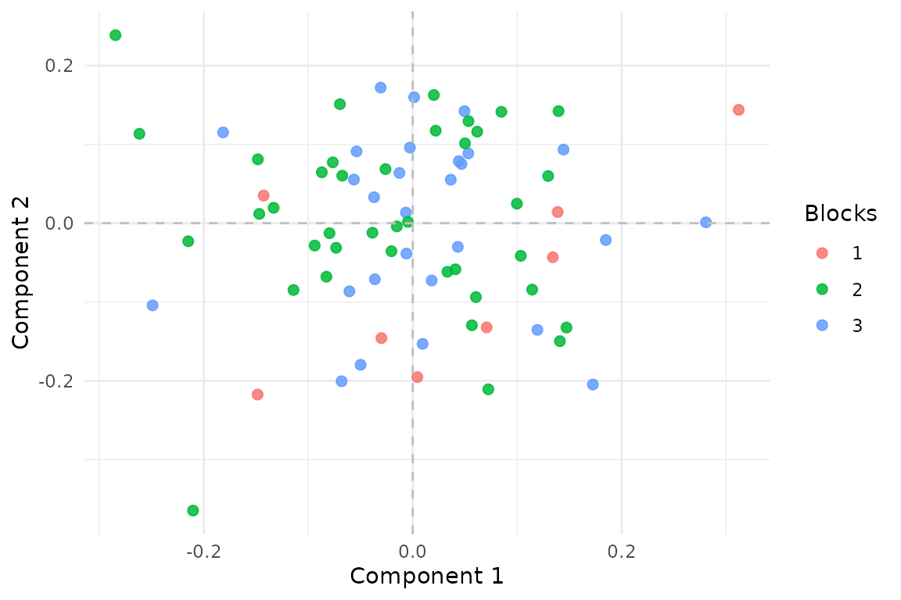
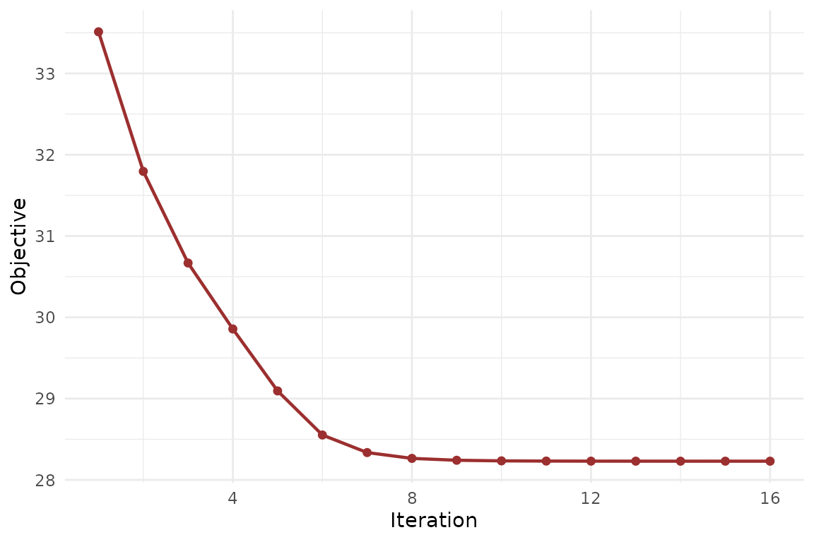

Why aligned MFA?
Standard MFA assumes every block has exactly the same rows.
aligned_mfa() relaxes that assumption. You use it when
blocks point back to the same latent population, but each block observes
only a subset of rows, or observes them in different patterns.
The key difference from anchored_mfa() is that no single
block is treated as the privileged reference. The shared scores live in
a latent reference row space, and each block contributes through its own
row_index mapping.
What does a quick fit look like?
c(
n_expression_rows = nrow(blocks$expression),
n_imaging_rows = nrow(blocks$imaging),
n_behavior_rows = nrow(blocks$behavior)
)
#> n_expression_rows n_imaging_rows n_behavior_rows
#> 60 55 55
fit <- aligned_mfa(blocks, row_index, N = N, ncomp = 2, normalization = "None")
S <- multivarious::scores(fit)
stopifnot(all(dim(S) == c(N, 2)))
stopifnot(all(is.finite(S)))
stopifnot(length(fit$objective_trace) >= 1)
cc <- cancor(
scale(S_true, center = TRUE, scale = FALSE),
scale(S, center = TRUE, scale = FALSE)
)$cor[1:2]
stopifnot(all(is.finite(cc)))
stopifnot(mean(cc) > 0.77)
round(cc, 3)
#> [1] 0.913 0.779
Aligned MFA estimates one score vector for each latent reference row. Here the points are colored by how many blocks cover that row.
Rows observed in two blocks are better constrained than rows observed
once, but the model still estimates a single coherent score space over
all N latent rows.
How do row mappings work?
lapply(row_index, head, 8)
#> $expression
#> [1] 1 4 5 6 7 9 10 11
#>
#> $imaging
#> [1] 1 2 3 4 5 7 8 10
#>
#> $behavior
#> [1] 1 2 3 4 5 6 9 10Each integer vector says which latent reference row each observed row
belongs to. This is the entire alignment mechanism: if row 7 in
expression and row 3 in imaging both map to
latent row 21, they contribute to the same shared score vector.
What happens when all rows line up?
When every block observes the same rows in the same order,
aligned_mfa() should agree with ordinary
mfa().
fit_aligned_full <- aligned_mfa(
full_blocks,
list(expression = seq_len(N), imaging = seq_len(N), behavior = seq_len(N)),
N = N,
ncomp = 2,
normalization = "None",
ridge = 1e-10,
max_iter = 200,
tol = 1e-10
)
fit_mfa <- mfa(full_blocks, ncomp = 2, normalization = "None")
P1 <- multivarious::scores(fit_aligned_full) %*%
solve(crossprod(multivarious::scores(fit_aligned_full)), t(multivarious::scores(fit_aligned_full)))
P2 <- multivarious::scores(fit_mfa) %*%
solve(crossprod(multivarious::scores(fit_mfa)), t(multivarious::scores(fit_mfa)))
rel <- norm(P1 - P2, type = "F") / (norm(P2, type = "F") + 1e-12)
stopifnot(is.finite(rel))
stopifnot(rel < 0.05)
rel
#> [1] 1.523229e-05That reduction check is important: it confirms that you are getting a genuine extension of MFA rather than a separate, incompatible factor model.
What should you inspect while fitting?
sapply(fit$V_list, dim)
#> expression imaging behavior
#> [1,] 20 18 16
#> [2,] 2 2 2
The aligned-MFA objective should fall quickly and then flatten.
The loading dimensions tell you how much information each block carries. The objective trace tells you whether the alternating updates have settled cleanly.
What about inference and validation?
aligned_mfa() already fits into the package’s task-aware
prediction surface: it exposes aligned scores and reconstructions, so
you can evaluate held-out workflows with explicit
cv_muscal() callbacks when you have a clear fold
construction strategy.
It also now exposes generic refit metadata, so
infer_muscal() can be used for bootstrap or permutation
summaries. For this method, fit-quality statistics are often more
informative than raw component standard deviations, because the score
space is orthonormalized during fitting.
Where next?
-
vignette("linked_mfa")for the anchored version with an explicit reference block -
vignette("mfa")for the classical same-row setting -
vignette("model_evaluation")for the shared evaluation API across supported methods -
?aligned_mfaforfeature_groups,feature_lambda, and weighting options